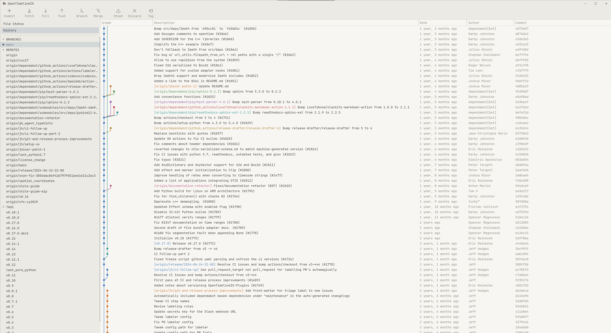
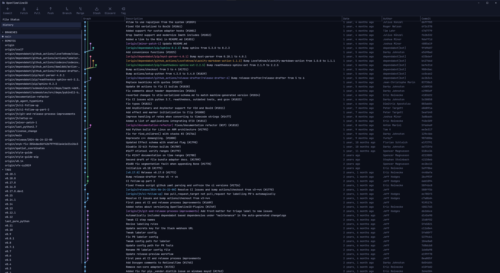
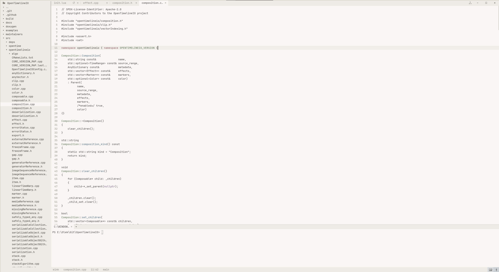
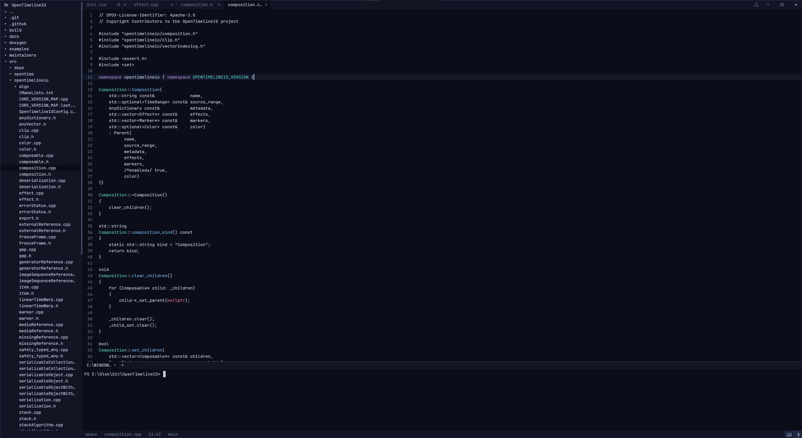

A text editor with version control built in. Native, written in Rust, configured in Lua.
Runs on Windows, macOS and Linux.


git

editorclick the stack to see the git window
Nothing else to explain. Designed to work.